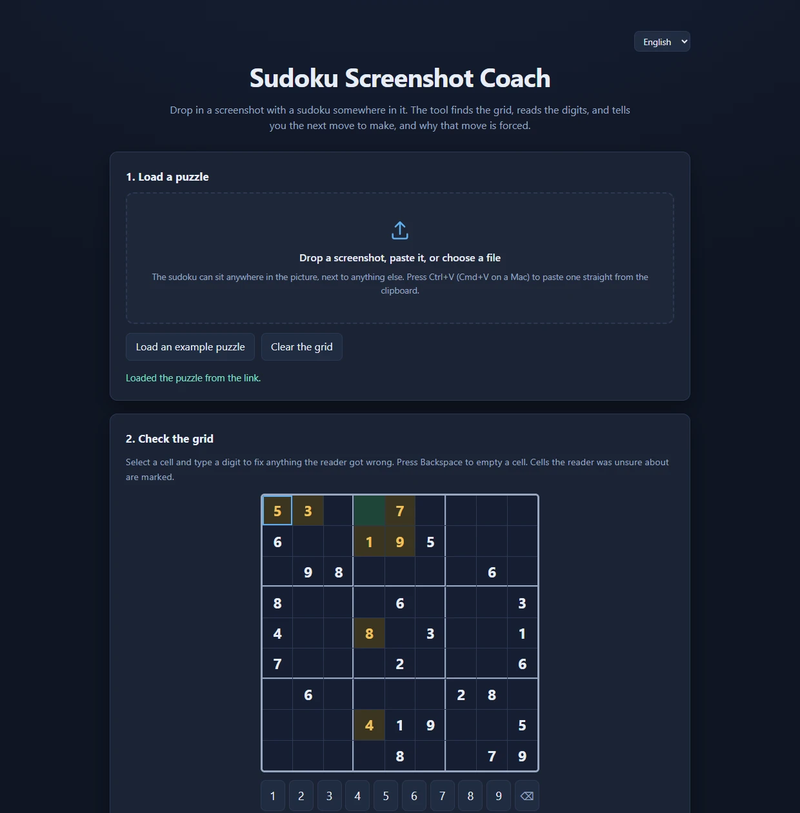

Drop in a screenshot. It reads the grid and names the technique that forces the move.

Why this is forced
r1c4 has one candidate left: 1, 3, 4, 5, 7, 8 and 9 already sit in its row, column or box.
Naked Single. Look at one empty cell and cross off every digit that already appears in its row, its column or its box.